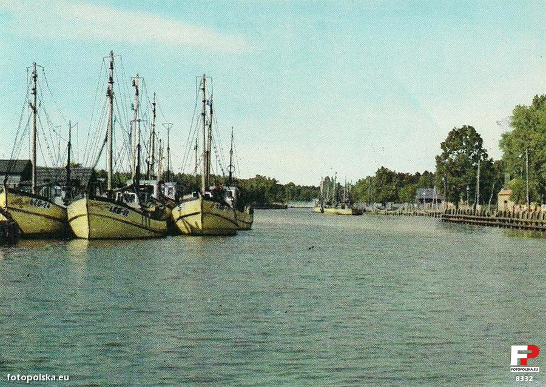
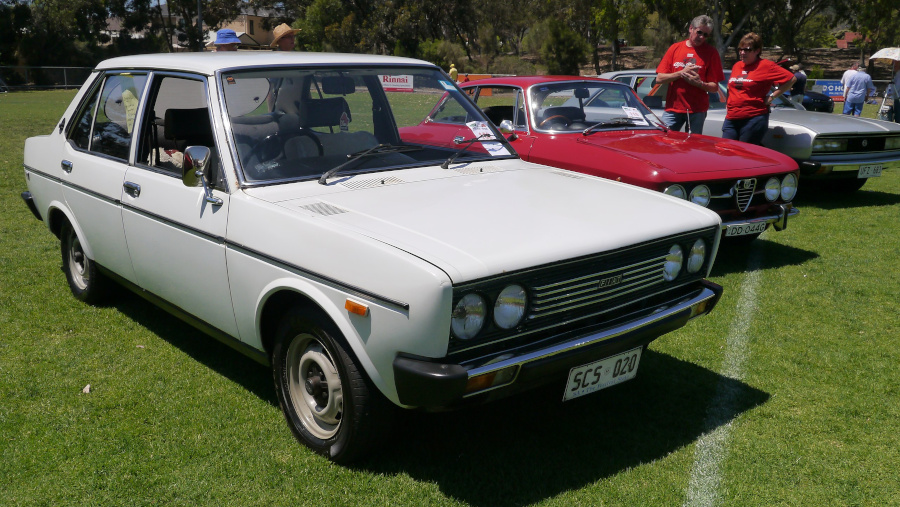
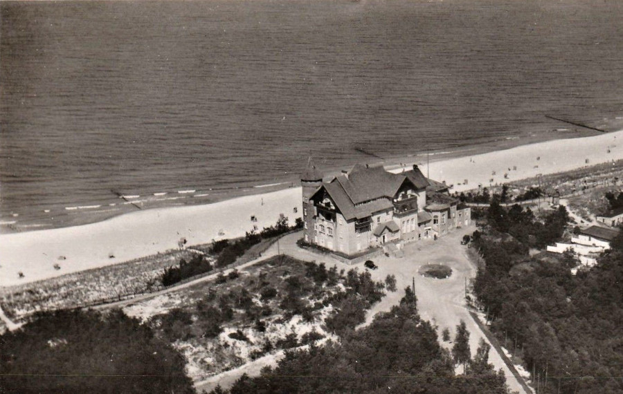

Примечание к переводу: Малгожата Мусерович - автор более дюжины весёлых и увлекательных книг "для молодёжи" которые хорошо читаются в любом возрасте. Притом они погружают нас в атмосферу социалистической Польши, 1970-80 годов.
Сей перевод имеет целью познакомить читателя не только с замечательной повестью но попутно и с нюансами культуры и языка. Поэтому некоторые обороты речи, слова и названия оставлены приближенными к родному языку автора. Пояснения на этот счет будут даны по ходу текста, в квадратных скобках.
"Кламчуха" - по-польски означает "лгунья", от глагола "klamac" - то есть, "врать". К главной героине - весёлой и находчивой девушке - это слово применяют в качестве прозвища, поэтому в названии пусть оно останется как есть.
[рыбацкий порт в городе Леба, в устье одноимённой реки]

Великие истории любви могут не иметь конца.
Но что иметь должны обязательно - так это начало.
Вот вам оригинальное начало для запутанной и полной препятствий любовной истории:
Был погожий майский день.
Небо было синим.
Солнце пригревало.
Холодные волны Балтики бились о белый песок недалёкого пляжа и выделяли бодрящий аромат, несомый на крыльях сильного
ветра по низким улочкам Лебы (Воеводство Слупское, Польская Народная Республика).
Время - 11:35.
Маленькая черноволосая девушка в больших очках стояла на набережной рыбацкого порта, со скукой глядя на побитый жизнью
катер "Ле-12". На палубе этой истрёпанной плавучей единицы стояли массивный шкипер в красной шапке и подвыпивший
бригадир. И экспрессивно ругались по поводу размера премии для команды катера.
– Папа! Я, это, уж пойду... - полу-гневно, полу-просяще позвала девушка в очках.
– Говорю, дождись, Аниэла! - грозно бросил в её сторону шкипер - и сразу вновь вернулся к перебранке
с бригадиром.
Аниэла вздохнула и поддала лёгкого пинка причальному столбику.
Аниэла не была красавицей.
Не выделялась к тому же ничем особым, если говорить о внешности. Имела однако ж много того, что
называется личным обаянием.
Чёрные живые очи, искрящиеся весело из-за толстых стёкол, смотрели слегка рассеянно и иронично.
Чёрные волосы обрамляли голову как пушистая шапочка и заканчивались коротким толстым хвостиком стянутым резинкой.
Щёки у Аниэлы были розовые, нос крупный и задорный, а выражение губ указывало на темперамент взрывной и далеко
не покладистый.
Выглядела как некто, что называется, с характером.
[имя героини Aniela - от слова Aniol (ангел) - то есть, Анжела - в оригинале произносится как "Аньела", но по-русски это звучит непривычно, поэтому пусть будет через "э"]
В данный момент она стояла качаясь на пятках и скучая немилосердно, понятия не имея что вот через минуту в её жизни начнётся что-то новое и неотвратимое. Как будто перст судьбы направил в сторону этой набережной большой белый автомобиль, который остановился с тихим шелестом как раз за спиной Аниэлы.
Леба - городок имевший статус "курортного", так что Фиат тут не наделает сенсации. Даже белый Мирафиори не был бы сенсацией, когда бы не его содержимое. Вообще даже это содержимое было актуальной сенсацией только для одной особы - для Аниэлы.
[Фиат Мирафиори образца 1978 года выглядит вот так:]

Небрежно щёлкнула дверца, и из авто высунулся высокий златовласый парень с сапфировыми глазами. Одет был в красные шорты-бермуды и белый свитер. Имел римский профиль и был красив как Аполлон. Вертя на пальце кольцо с ключами прошёлся лениво в сторону катера "Ле-12" и с оттенком любопытства стал наблюдать за сценой на палубе.
– Чем это они занимаются? - спросил он в пространство.
Плененная его видом Аниэла решила, что вопрос обращён конечно к ней. Не считая команды катера, наблюдавшей с некоторого расстояния за пререканиями шкипера и бригадира, в радиусе двадцати метров не было никого иного, кто сошёл бы за адресата этого вопроса.
– А это они ругаются - ответила, и спохватившись в долю оставшегося мгновения, что на носу у неё немодные очки, молниеносно сорвала их и спрятала в карман юбки. Сделала это в самое время - Аполлон повернул к ней сапфировые рефлекторы своих очей.
Аниэла стояла в выгодной позе, блестя зубами в улыбке и держа подмышкой сумку с книгами. Златовласый парень поглядел на неё с одобрением, приподняв левую бровь на вид её школьной формы с белым воротничком.
– Лицей? - спросил.
Как же славно было бы ответить что да, конечно. К сожалению, лицеев в Лебе не было.
– Хожу в восьмой класс, - ответила Аниэла, тем не менее продолжая улыбаться демонстрируя зубы, зная что они хороши.
– А чего ты тут делаешь в такое время? - Златовласый бессознательно ответил ей улыбкой.
– То же что и ты... в такое время.
– А я на каникулах.
– Уже?
– Пережил воспаление лёгких и мама отправила меня на море. Йод, понимаешь, и всякие такие штуки.
– Ходишь в старшую школу? [8 лет обучения - "основная" школа, дальше 3 года "старшая", по желанию]
– Да, - ответил он, вынимая портсигар. Второй класс заканчиваю. Безбрежная нудь.
– В школу в Гданьске? - спросила Аниэла, как бы с безразличием.
– В Познане. [по-польски "Познань" мужского рода]
В Познане! - подумала с болью, - так далеко! Парень не очень умело открыл портсигар, закурил и бросил спичку за спину. Слегка закашлявшись добавил сдавленным голосом:
– Завтра утром выезжаем. А то сидим уж тут две недели.
Повисло молчание, слышно было только шумные аргументы шкипера в красной шапке, оглашаемые охриплым от спора басом. "Уж завтра!" - что-то дёрнулось в пятнадцатилетнем сердце Аниэлы, приведя его в странное вибрирующее движение, заканчивающееся судорогой сожаления. Так значит две недели этот принц из сказки ходил по улицам её родного городка, наверное скучал немилосердно, две недели проходил под её окнами, а ей ни разу не пришло в голову что Провидение решило прислать в Лебу сей концентрат мужского шарма.
Впрочем, не все ещё было потеряно. "Возьму Провидение за рога" - дерзко решила Аниэла. Была она особой энергичной и полной жизненной динамики. Никогда не колебалась попусту перед лицом какого либо решения.
– Как тебя по имени? - спросила как ни в чем не бывало.
– Павел, - ответил золотоволосый.
– Тебе здесь еще что-то нужно? А то мне пора бежать.
– А куда тебе пора бежать? - спросил Павел, с облегчением выбрасывая папиросу.
– На пляж. Вырвалась из школы специально с этой целью. Чувствую нехватку кислорода.
– Давай подвезу, - предложил Павел небрежно. Отец дал ему ключики от Фиата только затем, чтобы припарковать машину
в порту, поскольку непосредственно рядом с рестораном "Перелка" [Жемчужинка], где они собирались обедать,
парковка была запрещена. Павел однако не видел потребности делиться этой информацией с черноволосой местной девушкой.
Отворил перед ней дверцу с выражением настолько безразличным, будто всю жизнь ничем иным не занимался, только подвозил
девушек на Мирафиори. Аниэла села как в трансе.
– Эй, что происходит? - завопил на это импульсивный шкипер в красной шапке, подпрыгивая в ярости на палубе катера. - Что опять творит эта девчонка? Аниэла, а ну возвращайся сюда!
Но Аниэла в тот момент ничуть не боялась отца. Видела только те сияющие сапфировые очи.
– Едем! - выдохнула слабым шёпотом, в то время как отец вопил с палубы:
– Шкуру спущу! Возвращайся!
– Чего хочет тот тип? - поинтересовался Павел, запуская двигатель.
– Сумасшедший, - нежно пояснила Аниэла. - Не обращай внимания.
Поехали.
В отличие от многих иных (например, из фильмов) любовных историй, которые заканчиваются сценой поцелуя, история Павла и Аниэлы поцелуем началась. Событие это имело место около рыбокомбината "Пшысмак" [Деликатес], на улице Туристичной. Комбинат об эту пору года был закрыт наглухо. На пустынной площадке перед зданием Павел и припарковал Фиат, поскольку дальше дорога к пляжу шла через лес.
Поцеловал Аниэлу, как только вышли из машины. И тут же заметил с неприязнью какого-то чумазого малолетку, подглядывающего из-за перевернутой кверху дном лодки. Другой такой же прятался за стволом сосны.
– Пойдём, - сказал сердито, - полно тут каких-то щенков.
Заметил, что местная девушка переполошилась на вид подглядывающих.
– А, пусть, - сказала, - это соседские дети.
– Идём отсюда.
– Идём.
[пляж в Лебе]

Двинулись к пляжу по асфальту Туристичной улицы. Упоённая первым в жизни поцелуем, как и фактом того, что Павел обнимает её за плечи, Аниэла враз забыла о подглядывающих сынках пекаря, а напрасно.
Хлопцы не упускали её ни на минуту. На пляже уселись поодаль, и как бы занявшись строительством замков, не спускали ока с Аниэлы и её кавалера.
Аниэла их не видела. Час на ветренном пляже минул как сон. Павел, победив возникшее сперва раздражение, решил попросту игнорировать мальчишек. Декламировал стихи, что повергло Аниэлу в безудержный восторг. Поведал также, что влюбился в неё с абсолютно первого взгляда. После чего долго молчали, глядели друг другу в глаза и держались за руки.
Потом как-то внезапно Павел пришёл в чувство и вспомнил что папаша ждёт его в ресторане "Перелка", где было запланировано съесть обед.
– Ну, теперь-то уж наверное не ждёт, - поведала с иронией Аниэла, которая могла бы так сидеть на пляже хоть бы и до завтрашнего утра.
Он однако же решил, что должен вернуться. Записал адрес Аниэлы и сказал что зайдёт за ней сразу после обеда.
– Какая досада, что не встретил тебя раньше, - добавил горячо. - Ужасно, что расстаёмся уже завтра.
– О да, - вздохнула Аниэла, поднимая на него очи полные слёз.
– У тебя глаза беззащитной маленькой серны, - расстрогался Павел, и даже тихое бурчание раздавшееся из его желудка
имело какой-то жалостный тон. - Остались нам только полдень да вечер. Нужно их провести очень красиво.
– Например как? - заинтересовалась Аниэла.
– Ну, пойдём, - сказал он, - Надо расстаться на часок. Обязательства есть обязательства.
Аниэла проводила его аж до самых дверей ресторана "Перелка", из которых валил кислый запах пива и папирос. Павел исчез достаточно спешно в шумном нутре - видела ещё, как сидел при столике обок тучного пана с надутым лицом и что-то тому объяснял, прижав руку к груди.
"Охо, папаша таки ждал" - подумала Аниэла и сбежала из-под дверей ресторана.
Пошла домой.
С отцом они жили на втором этаже, тремя воротами дальше по улице. Первый этаж их голубого домика занимало уж двадцать
лет семейство Курков [от слова "кура", с ударением на У]. Аниэла постучалась к ним и нажала ручку в надежде, что
застанет дома свою приятельницу Касю Курковну, и сразу ей расскажет что Великая Любовь наконец пересекла её жизненный
путь своей светлой полосой.
К сожалению, кроме выветрившегося запаха жареного лука, жилище Курков не ответило ничем на её стук. В то же время
сверху были слышны тяжкие шаги отца Аниэлы, который крутился по кухне злой, потому что голодный.
– А, вот ты наконец! - крикнул он с возмущением при виде входящей дочки. - И что это такое, спрашиваю?
Куда ты подевалась? Разве не сказал тебе ждать? Мало что занятия прогуливает, дак ещё дети пекаря мне сказали,
что целовалась с тем лалушем!!! [laluś - мужчина или парень, слишком заботящийся о своей внешности]
– Он вообще никакой ни разу не лалуш! - вспылила Аниэла.
– Лалуш и есть, в квадрате! - продолжал шуметь отец. Он был вспыльчив и имел повышенное давление. Любил Аниэлу, но не
имел на неё терпения. Со времени когда умерла её мать, воспитывал девочку полностью посвятив себя ей, да только по
прошествии двенадцати лет таких стараний обнаружил, что не только не понимает своё чадо, но и вообще оно целиком
ускользает от его влияния. - Обеда отцу не сделаешь, рубашка не глажена уж другую неделю, в буфете пусто, а ты себе
прогуливаешь! С лалушами!
– Яйца есть, - сказала Аниэла сердито и мрачно. - Ты в самом деле яичницу себе сделать не можешь?
– Хватит с меня такой еды! Идём в "Перелку".
– Ой, не-не. Никогда в жизни! - Аниэла почувствовала слабость.
– Съел бы котлету. И горячего супу.
– Всё равно нынче понедельник. Безмясные блюда. Снова хочешь рыбой питаться?
– Ни за что.
– Уж лучше я сделаю оладушки. Вкусные, пышные, - неосторожно начала Аниэла, - А потом мне ещё надо будет выйти,
ну... - Йюзеф Ковалик, отец Аниэлы, навострил уши.
– Куда это выйти? - занервничал он наново.
– До колежанки. Будем учиться. ["коллега" женского рода, в данном случае - одноклассница]
– Это колежанка, которая на Фиате Мирафиори?
– Папа!!!
– Ну а что, корчишь рожицы. Врёшь мне тут прямо в глаза, а потом рожицы, того...
– Папа, я должна выйти, верь мне...
– Никогда! - рыкнул отец. - Останешься дома. Запру тебя, к чёрту, на ключ! Уж я тебе покажу врать! С лалушами на
гулянки бегать!
– Да нет никаких "лалушей"!
– Это каких "никаких"? Какие такие "никакие", спрашиваю? Видел только одного, а тут оказывается, ты ещё таких знаешь?
– Никого не знаю! - крикнула Аниела, стуча кулаками по столу. - Случайно встретила коллегу, а ты его сразу лалушем называешь!
– А эти, другие?
– Какие другие?
– Другие лалуши!!
– Свихнуться можно!!!
И так далее, и так далее. Излишне было бы описывать ход всей ссоры. Тем более, что независимо от этого хода, результат не вызывал сомнений: победителем вышел отец. Хлопнул входными дверьми и замкнув их на ключ снаружи, сбежал с шумом по лестнице. Отправился в "Перелку" на обед состоящий из горохового супа и панированного хека с пивом.
Аниэла в отчаянии осталась в пустой комнате, где, проклиная деспотизм отца и поглядывая то и дело на часы, лихорадочно перебирала в мыслях все возможности выбраться до Павелка, который в любую минуту мог постучать в дверь.
[здесь и далее сохраняем типичную для польского форму уменьшительных мужских имен: Павелек, Йюзек, Янек - вы правильно поступите если будете читать окончание как "-эк", а ударение ставить на второй слог с конца]
Сбежать через окно? Не годится. Окна их жилища выходили на соседский двор, который был застроен до половины свинарником. Если бы и смогла пройти по узкому карнизу под окном, соскочить на крышу хлева, а потом с крыши на землю - всё равно оказалась бы в ловушке, так как со двора выйти можно было либо через двери соседского дома, либо через очень высокую стену утыканную по верху осколками стекла. Ни один из этих путей не стоило брать в расчет.
Была всё же ещё одна возможность. Тут же обок кухни умещалась маленькая кладовка, из которой круглое окошко под потолком, в целях вентиляции, выходило на лестничную площадку. Если бы только смогла через него протиснуться...
"Должна!" - твёрдо решила Аниэла. Без сомнения требовалось это сделать. Последние часы последнего дня в Лебе Павелек повинен был провести с ней. Это не подлежало обсуждению. Не даром Провидение поставило на её жизненном пути этого чудесного парня. Упустить такой шанс - значило бы оказать непростительное безволие и глупость.
Сняла осторожно очки и отложила их на полку. Разделась до белья, чтобы максимально уменьшиться в объёме. Затем отворила окошко кладовки. Свитер и юбку свернула в узелок, узелок ухватила в зубы, влезла на шкафчик, поднялась на цыпочки и просунула голову в окошко.
Сразу поняла, что читанное когда-либо в приключенческих книжках насчет протискивания через разные препятствия, касалось скорее парней. Потому что книжки твердили что самое важное в такой ситуации - просунуть голову, а остальное уж как-нибудь проскользнёт. Наверное для особ мужского пола, не имеющих, как ведомо, бюста, этот принцип мог быть правильным. В то время как грудная клетка Аниэлы не пролезала в проём.
В общем, Аниэла здорово застряла в окошке, а всевозможные попытки освободиться только усугубили ситуацию - теперь не могла не только вылезти на лестницу, но и вернуться внутрь кладовки.
Этот момент и выбрало Провидение, чтобы вновь поставить на жизненном пути Аниэлы златовласого Павелка. Насвистывая взбежал он с улицы на первый этаж, убедился что там только двери с надписью "Курка" и вследствие того поднялся до конца лестницы, перескакивая по пять ступенек своими длинными ногами.
Голова и бюст Аниэлы, торчащие в округлой раме тут же под потолком на манер охотничьего трофея, с узелком в зубах и молниями в вытаращеных глазах - по счастью не попались в поле его зрения. Стучал в дверь, прислушивался, стучал снова и шипел с нетерпением, а наконец по прошествии длительного времени бесплодных ожиданий, поворотил, расстроенный, к выходу.
В то время Аниэла, видя как Павел отдаляется и исчезает из её дома, а тем самым и из её жизни, собралась в последнем отчаянном усилии. Уперлась каблуками в противоположную стену кладовки, напрягла мышцы, оттолкнулась ногами с огромной, рождённой отчаянием, силой - и катапультировалась наконец, упав с глухим шумом на лестницу.
К сожалению, пока пришла в себя, пока сообразила что имеет на себе из одежты только трусы и лифчик, пока порхающими с поспешностью руками вновь надела свитерок и юбку и выбежала по лестнице наружу - Павелек исчез.
Напрасно аж до вечера искала его по улицам, напрасно заглядывала в "Перелку" и "Морское Око", напрасно трепетала при виде белых Фиатов. Павелка нигде не было.
Обыскала без малого весь город, да только было то вполне безнадёжно. Не ведала даже, остановилась ли их семья в Доме Отдыха или на частной квартире. Не ведала о нем вообще ничего. Не знала даже его адреса. Помнила только что живёт в Познане, но вследствие факта что Познань насчитывает полмиллиона жителей, а она не знает даже фамилии Павла, не имело это никакого значения.
[здесь, в письмах, и далее в диалогах могут встречаться имена в звательном падеже: Аниэлко, Касю, Павелку - будем оставлять их как есть, т.к. и в русском он рудиментарно сохранился]
Аниэле Ковалик, ул. Косцюшки 44 кв 2, 84-360 Леба, вой. Слупское
Познань, 29 мая 77
Моя Аниэлко!
Даже не знаешь, как мило Тебя вспоминаю. Только час смогли мы быть друг с другом, но бывают часы которые значат больше
чем года. Не ведаю, отчего не было Тебя дома тогда, после обеда. Заходил к Тебе не раз. К сожалению двери были все
заперты. Выехал совершенно убитый и до сегодня не знаю, не случилось ли с Тобой чего плохого.
Отзовись, напиши.
Целую тебя - Павел Новацкий
Мой адрес: Рузвельта 5а кв 2, 60-829 Познань
P.S. Очень мне понравился домик, в котором живёшь. Стоит в удобном месте, на главной улице, а однако и недалеко от
пляжа. В связи с этим пришла мне одна мысль: может кто из соседей, например, сдаёт комнату на четверых? Речь об июле.
Знакомый родителей выбирается на море, а сама знаешь, как сложно найти квартиру. Буду Тебе много благодарен за помощь.
Пиши скорее. Павел.
Павлу Новацкому, Рузвельта 5а кв 2, 60-829 Познань
Леба, 2 июня 77
Привет, Павел. Спасибо за письмо. Соседка снизу готова сдать комнату тем твоим четырём знакомым. Что за счастливое
совпадение случайностей, эта наша встреча, правда?
Счастливое, собственно, для твоих знакомых. Когда бы ещё понадобилась от меня подобная услуга, пиши смело.
Жму руку - Аниэла
Аниэле Ковалик, ул. Косцюшки 44 кв 2, 84-360 Леба
Познань, 5 июня 77
Любимая Аниэлко!
Спасибо за письмо и помощь с комнатой, Но если мыслишь, что только для того написал до Тебя, то значит, что меня ещё
не знаешь! Писал потому что тоскую по тебе! Думаю о Тебе! Хотел бы Тебя увидеть!
Не умею писать писем, но если к тому привыкнешь, то можешь понять, что чувствует моё сердце.
Целую Тебя - Павел
В Лицей Полиграфично-Книжный, Познань, ул Розовая 17
Леба, 8 июня 77
Уважаемая Дирекция,
Обращаюсь с вопросом, каким образом могу стать ученицей Лицея Полиграфии. Буду благодарна за подробную информацию.
Проживаю в Лебе (вой. Слупское), отсюда мой вопрос про интернат: есть ли свободные места? И от чего зависит
возможность получить место в интернате. Требуется ли сдавать вступительный экзамен? И когда. Должна добавить, что
очень расчитываю на возможность обучения в Лицее Полиграфично-Книжном, поскольку полиграфия, как и книжное дело,
являются моим жизненным призванием. Почтительно прошу об ответе.
с уважением, Аниэла Ковалик, Косцюшки 44 кв 2, 84-360 Леба
Гр. Аниэле Ковалик, ул. Косцюшки 44 кв 2, 84-360 Леба, вой. Слупское
Познань, 16 июня 77
В ответ на обращение Гражданина/нки секретариат Лицея Полиграфично-Книжного информирует, что приём в Лицей
осуществляется на основе аттестата и пройдёт в дни 27 и 28 июня с.г. Требуемые документы: заявление, 3 фото,
биография, аттестат об окончании основной школы. Предоставление места в интернате зависит от количества обратившихся,
а также от подтверждённых документально обстоятельств. Приоритет имеют члены семей с месячным доходом на человека в
пределах среднего диапазона или ниже.
Заместитель директора - подпись нечитаема
Касе Курковне, Косцюшки 44 кв 1, 84-360 Леба
Познань, 2 июля 77
Любимая Касю, какая досада что Тебя тут нет. Так привыкла обо всём Тебе рассказывать, что теперь я прямо лопаюсь от
избытка не рассказанных новостей. Безнадёжно влюблена, хожу тут одна по чужому городу и не имею до кого и рта раскрыть,
не считая портьерки в Доме Туриста, где провела три ночи. [Портьерка - женщина-портье - в польском феминитивы
существуют почти для любых профессий и пр.] Пришлось вложиться в эти ночёвки, так как минимум дожидалась оглашения
результатов. Я принята! Даже мне то удивительно. Была готова к острой конкуретной борьбе, к преодолению всяких
возможных препятствий, а тут ничего такого. Как в масло. Предоставлен мне даже интернат, хотя не всем достаётся такая
честь. Впрочем начинаю задумываться, какая мне с него польза. Интернат есть и притом очень близко от школы, да зато
ужасно далеко от... Павелка! В то же время наша познаньская родня (кузин отца, рассказывала я Тебе, помнишь?) волею
судьбы живёт буквально за двести метров от дома Павла. Решила ввинтиться к ним любой ценой. Конечно, не говори о том
моему папе!!!
А Павелка в Познане нет... Это самое грустное. Звоню каждый день по сто раз, и телефон не отвечает. Видимо все выехали
на каникулы.
Ну ничего. Как-нибудь дождусь сентября. Любовь такая большая как наша за два дурацких месяца не умирает.
Больше всего меня удручает этот ужасный Лицей Полиграфичный. Что я там, бедная, буду делать?
Павла нет, у театров как раз середина не-сезона. Возвращаюсь домой. Автостопом, как обычно. Увидимся через неделю.
Аниэла
Юзефу Ковалику, Косцюшки 44 кв 2, 84-360 Леба
Любимый папа! На обороте открытки видишь Познаньскую Ратушу. Красивая, ренесанс. Я принята в Лицей Полиграфичный на
основании моего прекрасного аттестата. Ну сам видишь. Зачем было упираться? Возвращаюсь сразу же. Автостопом.
Буду дома за несколько дней. По дороге хочу посмотреть исторические города - Гнезно, Торунь, Мальборк и, конечно,
Гданьск. Будет очень познавательная поездка.
Целую - Аниэлка
Аниэле Ковалик, Косцюшки 44 кв 2, 84-360 Леба
Домик в Лесничестве, 11 июля 77
Дорогая Аниэлко!
Написал до Тебя огромное письмо, а ты верно обиделась и молчишь. Прости меня, я вправду не умею писать писем, и всегда
пишу что-то иное чем что на мысли. Тоскую за Тобой день и ночь. Тут красиво, и клюёт здорово. Поймал тоже на крючок,
с лодки, огромную щуку. Мама запекла её с грибами в тесте, вкусно - пальцы оближешь. Не могла бы ты мне прислать свою
фотографию. Немного уж забываю как выглядишь. Посылаю Тебе мою. Этот маленький тип рядом со мной - пан Геньо, лесничий.
Фотографию сделал егерь, сопровождавший нас в охоте на вепря. Я подстрелил кабана. Лесничий обещал нам колбасы и
ветчины с него. Ветчина такая имеет незабываемый аромат и смак.
Целую Тебя горячо. Павел
P.S. Вот то чёрное внизу фотки - это зад вепря. Целиком он в кадр не вместился. ["fotka" - так в оригинале]